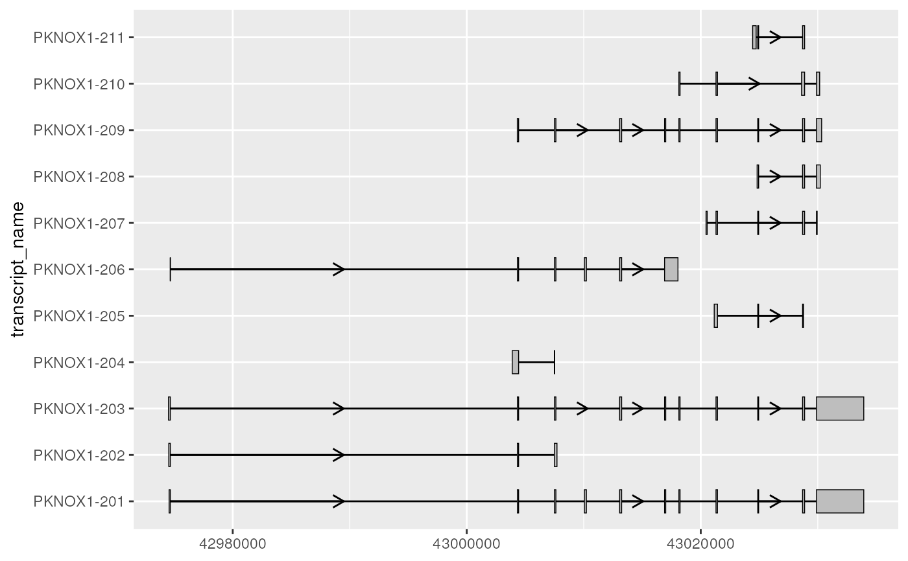

Improve transcript structure visualisation by shortening intron gaps
Source:R/shorten_gaps.R
shorten_gaps.Rdshorten_gaps is a helper function intended to improve visualizaing
transcript structure when a transcript has long introns. shorten_gaps does
this by shortening gaps (regions that do not overlap any exons) to a
user-inputted target_gap_width, then rescaling introns and exons to
preserve exon alignment. shorten_gaps will never modify the size of input
exons. Importantly, the outputted rescaled co-ordinates should only be used
for visualization as they will not match the original genomic coordinates.
shorten_gaps(exons, introns, group_var = NULL, target_gap_width = 100L)Arguments
- exons
data.framecontaining exonic ranges, which can contain data from from multiple transcripts.- introns
data.framecontaining the corresponding introns toexons. This can be created by applyingto_intron()to theexons. If not usingto_intron(), make sure intron start/end are defined as those precisely matching the adjacent exon boundaries, rather than exon end + 1 and exon start - 1.- group_var
characterif inputdata.framecontains more than 1 transcript,group_varshould specify the column that differentiates transcripts (e.g. "transcript_id").- target_gap_width
integerspecifying the size in base pairs to shorten the gaps to.
Value
a data.frame that contains the co-ordinates of introns (with
shortened gaps) and exons of each input transcript, rescaled to keep exons
aligned.
Examples
library(magrittr)
gba_ens_105_exons <- gba_ens_105 %>%
dplyr::filter(type == "exon")
# first, let's use an example of a single transcript
single_tx <- gba_ens_105_exons %>%
dplyr::filter(transcript_name %in% c("GBA-203"))
single_tx
#> # A tibble: 10 × 8
#> seqnames start end strand type gene_name transcript_name
#> <fct> <int> <int> <fct> <fct> <chr> <chr>
#> 1 1 155241086 155241275 - exon GBA GBA-203
#> 2 1 155240630 155240717 - exon GBA GBA-203
#> 3 1 155239886 155240077 - exon GBA GBA-203
#> 4 1 155238517 155238650 - exon GBA GBA-203
#> 5 1 155238134 155238306 - exon GBA GBA-203
#> 6 1 155237341 155237578 - exon GBA GBA-203
#> 7 1 155236245 155236469 - exon GBA GBA-203
#> 8 1 155235681 155235844 - exon GBA GBA-203
#> 9 1 155235195 155235311 - exon GBA GBA-203
#> 10 1 155234559 155235100 - exon GBA GBA-203
#> # … with 1 more variable: transcript_biotype <chr>
single_tx_rescaled <- shorten_gaps(
single_tx,
to_intron(single_tx),
group_var = NULL,
target_gap_width = 100L
)
# rescaled output contains both introns and exons
single_tx_rescaled
#> # A tibble: 19 × 8
#> seqnames start end strand type gene_name transcript_name transcript_biot…
#> <fct> <dbl> <dbl> <fct> <chr> <chr> <chr> <chr>
#> 1 1 2 543 - exon GBA GBA-203 protein_coding
#> 2 1 543 638 - intron GBA GBA-203 protein_coding
#> 3 1 638 754 - exon GBA GBA-203 protein_coding
#> 4 1 754 855 - intron GBA GBA-203 protein_coding
#> 5 1 855 1018 - exon GBA GBA-203 protein_coding
#> 6 1 1018 1119 - intron GBA GBA-203 protein_coding
#> 7 1 1119 1343 - exon GBA GBA-203 protein_coding
#> 8 1 1343 1444 - intron GBA GBA-203 protein_coding
#> 9 1 1444 1681 - exon GBA GBA-203 protein_coding
#> 10 1 1681 1782 - intron GBA GBA-203 protein_coding
#> 11 1 1782 1954 - exon GBA GBA-203 protein_coding
#> 12 1 1954 2055 - intron GBA GBA-203 protein_coding
#> 13 1 2055 2188 - exon GBA GBA-203 protein_coding
#> 14 1 2188 2289 - intron GBA GBA-203 protein_coding
#> 15 1 2289 2480 - exon GBA GBA-203 protein_coding
#> 16 1 2480 2581 - intron GBA GBA-203 protein_coding
#> 17 1 2581 2668 - exon GBA GBA-203 protein_coding
#> 18 1 2668 2769 - intron GBA GBA-203 protein_coding
#> 19 1 2769 2958 - exon GBA GBA-203 protein_coding
# create function to compare transcript visualisation
# before and after shortening gaps
plot_before_after <- function(before_shorten_gaps,
after_shorten_gaps,
group_var) {
before_plot <- before_shorten_gaps %>%
ggplot2::ggplot(ggplot2::aes_string(
xstart = "start",
xend = "end",
y = group_var
)) +
geom_range() +
geom_intron(
data = to_intron(before_shorten_gaps, group_var),
strand = "-",
arrow.min.intron.length = 500
)
after_plot <- after_shorten_gaps %>%
dplyr::filter(type == "exon") %>%
ggplot2::ggplot(ggplot2::aes_string(
xstart = "start",
xend = "end",
y = group_var
)) +
geom_range() +
geom_intron(
data = after_shorten_gaps %>%
dplyr::filter(type == "intron"),
strand = "-",
arrow.min.intron.length = 200
)
before_after_plotlist <- list(before_plot, after_plot)
before_after_plot <- ggpubr::ggarrange(
plotlist = before_after_plotlist,
nrow = 2,
labels = c("Before shorten_gaps()", "After shorten_gaps()")
)
return(before_after_plot)
}
plot_before_after(
before_shorten_gaps = single_tx,
after_shorten_gaps = single_tx_rescaled,
group_var = "transcript_name"
)

# exons can also contain multiple transcripts
multi_tx <- gba_ens_105_exons %>%
dplyr::filter(
transcript_name %in% paste0("GBA-20", 2:8)
)
multi_tx_rescaled <- shorten_gaps(
multi_tx,
to_intron(multi_tx, "transcript_name"),
group_var = "transcript_name",
target_gap_width = 100L
)
plot_before_after(
before_shorten_gaps = multi_tx,
after_shorten_gaps = multi_tx_rescaled,
group_var = "transcript_name"
)